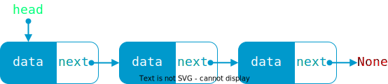
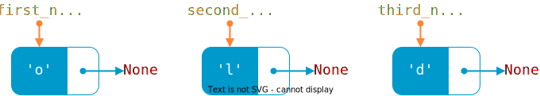
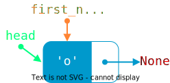
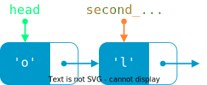
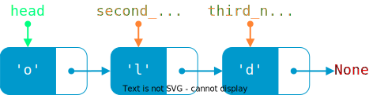

Khi lưu trữ và xử lý tập hợp gồm nhiều phần tử, mảng là một lựa chọn phù hợp. Song mảng vẫn có những hạn chế như:
Kích thước của mảng là cố định. Nói cách khác, số lượng phần tử của mảng không thể tăng hoặc giảm một cách linh hoạt. Số lượng phần tử của mảng thường phải khai báo dư so với số lượng sử dụng thực tế.
Khi cần chèn hoặc xóa phần tử, mảng cần phải dịch chuyển các phần tử, dẫn đến hao phí về mặt thời gian và bộ nhớ. Thậm chí, có trường hợp phải khai báo mảng mới, rồi sao chép các phần tử từ mảng gốc sang mảng mới, hiệu quả thực thi lại càng kém hơn.
Do đó, ta cần một cấu trúc dữ liệu khác có thể khắc phục những hạn chế này.
Danh sách liên kết là một cấu trúc dữ liệu gồm các phần tử kết nối với nhau. Mỗi phần tử được gọi là một node, thường gồm hai thành phần:
Phần thứ nhất chứa dữ liệu, tạm gọi là data.
Phần thứ hai chứa địa chỉ của một node khác, tạm gọi là next.
Hình 1. Minh họa một node
Khi next của node liền trước chứa địa chỉ của node liền sau, ta nói theo thuật ngữ chuyên môn là trỏ vào/trỏ tới/trỏ đến node liền sau.
Bên cạnh đó, danh sách liên kết còn có một biến được dùng để nắm giữ node đầu tiên, tạm gọi là head. Biến head đóng vai trò là điểm khởi đầu hoặc đầu vào của danh sách liên kết. Dựa vào head, ta có thể duyệt qua toàn bộ danh sách liên kết.
Node cuối cùng có thành phần next trỏ đến None, là đối tượng mang ý nghĩa rỗng, không có giá trị. None là dấu hiệu giúp nhận biết không còn node nào nữa.

Hình 2. Minh họa một danh sách liên kết
Xe lửa có thể xem là hình ảnh minh họa cho danh sách liên kết. Bởi xe lửa gồm nhiều toa, toa liền trước móc nối với toa liền sau.
Hình 3. Xe lửa, theo nghĩa nào đó, là một danh sách liên kết1
Danh sách liên kết được sử dụng hiệu quả
trong trường hợp các thao tác chèn thêm hoặc xóa bớt thường xuyên diễn ra,
hoặc trong trường hợp muốn quản lý bộ nhớ động, tức bộ nhớ thay đổi trong khi chạy chương trình, chứ không cố định từ đầu.
Các loại danh sách liên kết
Có nhiều loại danh sách liên kết, ví dụ như: danh sách liên kết đơn, danh sách liên kết đôi, danh sách liên kết vòng, v.v...
Mặc định, các nội dung trong bài này đều đề cập danh sách liên kết đơn và chỉ gọi tắt là danh sách liên kết.
Ngoài thành phần data, mỗi node còn có thành phần next trỏ đến node liền sau nó, giúp các node liên kết với nhau. Các thao tác thêm node và xóa node thực chất đều là thay đổi thành phần next này, nghĩa là thay đổi liên kết giữa các node.
Về mã lệnh trong bài này
Việc viết mã lệnh để minh họa danh sách liên kết trong bài này đòi hỏi hiểu biết về lập trình hướng đối tượng và kỹ thuật lập trình, là kiến thức nằm ngoài chương trình phổ thông. Do đó, một số câu lệnh sẽ chỉ diễn giải sơ nét. Bạn có thể ghép các đoạn mã lệnh thành chương trình hoàn chỉnh để chạy mà không cần quá quan tâm chi tiết kỹ thuật.
# Tạo kiểu dữ liệu node gồm hai thành phần data và nextclassnode:def__init__(self,data):self.data=dataself.next=None
Bước 2:
Tạo kiểu dữ liệu danh sách liên kết, đặt tên là linked_list. Kiểu dữ liệu linked_list này có thuộc tính head dùng để nắm giữ node đầu tiên trong danh sách liên kết.
# Tạo kiểu dữ liệu danh sách liên kết, đặt tên là linked_listclasslinked_list:def__init__(self):self.head=None# (1)!
Lệnh này chỉ là khai báo mang tính thủ tục, thuộc tính headtạm thời trỏ đến None.
Bước 3:
Trong chương trình chính, ta khai báo biến danh sách liên kết, đặt tên là L. Lúc này, danh sách liên kết L là rỗng, chưa có node nào, do thuộc tính head của L đang trỏ đến None như khai báo tại bước 2.
# Chương trình chínhif__name__=='__main__':L=linked_list()# Khai báo biến danh sách liên kết L
Bước 4:
Khởi tạo 3 node, lần lượt đặt tên là first_node, second_node và third_node, chứa dữ liệu lần lượt là 'o', 'l' và 'd'. Lúc này, cả ba node đều đơn lẻ, rời rạc, chưa có kết nối với nhau.
# Khởi tạo 3 node đơn lẻfirst_node=node('o')second_node=node('l')third_node=node('d')

Hình 4. Ba node đơn lẻ
Bước 5:
Liên kết các node với nhau bằng cách cho thuộc tính head của L trỏ đến một node nào đó, rồi cho node này trỏ đến một node khác, và cứ như thế đối với các node còn lại.
Bước 5.1: Cho head của L trỏ đến first_node.

Hình 5.1. Minh họa bước 5.1 của thao tác khởi tạo
Bước 5.2: Cho next của first_node trỏ đến second_node.

Hình 5.2. Minh họa bước 5.2 của thao tác khởi tạo
Bước 5.3: Cho next của second_node trỏ đến third_node.

Hình 5.3. Minh họa bước 5.3 của thao tác khởi tạo
# Liên kết các node với nhauL.head=first_node# Cho head của L trỏ đến first_nodefirst_node.next=second_node# Cho first_node trỏ đến second_nodesecond_node.next=third_node# Cho second_node trỏ đến third_node
Duyệt danh sách liên kết là quy trình di chuyển lần lượt qua các node, xuất phát từ node đầu tiên, do biến head trỏ đến, cho đến node cuối cùng, là node có thành phần next trỏ đến None.
Để duyệt danh sách liên kết, ta sử dụng biến current, khởi tạo bằng head; rồi dùng vòng lặp cho current lần lượt trỏ đến các node tiếp theo, cho đến khi gặp None.
Hàm sau đây thực hiện duyệt danh sách liên kết và in ra màn hình dữ liệu của từng node.
# Hàm in ra dữ liệu của các node trong danh sách liên kếtdefprint_linked_list(l,message):print(message)# In ra thông báo nào đócurrent=l.head# Cho current trỏ đến headwhilecurrentisnotNone:# Trong khi chưa gặp Noneprint(current.data,end=' -> ')# thì in ra data của current,# kèm theo mũi têncurrent=current.next# Cho current trỏ đến node tiếp theoprint()# Xuống dòng
Trong chương trình chính, ta gọi hàm vừa viết trên.
# Hàm chèn vào trước một node có dữ liệu keydefinsert_before(l,key,new_data):new_node=node(new_data)# Tạo node mới# Dùng vòng lặp để tìm node có dữ liệu keycurrent=l.head# Cho current trỏ đến headwhilecurrentisnotNone:ifcurrent.data==key:# Nếu tìm thấy key thì ngắt vòng lặpbreakprevious=current# Ngược lại, nếu chưa tìm thấy,# thì cho previous thay thế currentcurrent=current.next# và current di chuyển đến node tiếp theonew_node.next=current# Cho next của node mới trỏ đến currentprevious.next=new_node# Cho next của previous trỏ đến node mới
Trong chương trình chính, ta gọi hàm vừa viết trên.
# Gọi hàm insert_before để chèn thêm node mới có dữ liệu 'y'# vào trước node có dữ liệu 'd'insert_before(L,'d','y')# Gọi hàm print_linked_list để in ra danh sách liên kếtprint_linked_list(L,'Danh sách liên kết sau khi chèn thêm')
Output:
Danh sách liên kết sau khi chèn thêmo -> l -> y -> d ->
Lưu ý
Như đã nói trên, hàm này áp dụng cho trường hợp lý tưởng, đó là node key có tồn tại trong danh sách liên kết và không phải là node đầu tiên.
# Hàm xóa node có dữ liệu keydefremove(self,key):current=self.head# Cho current trỏ đến node đầu tiên# Dùng vòng lặp để tìm node có dữ liệu keywhilecurrentisnotNone:ifcurrent.data==key:# Nếu tìm thấy key thì ngắt vòng lặpbreakprevious=current# Ngược lại, nếu chưa tìm thấy,# thì cho previous thay thế currentcurrent=current.next# và current di chuyển đến node tiếp theoprevious.next=current.next# Ngắt liên kết đến current bằng cách# cho next của previous trỏ đến# node liền sau currentdelcurrent# Xóa current
Trong chương trình chính, ta gọi hàm vừa viết trên.
# Gọi hàm remove để xóa node có dữ liệu 'y'remove(L,'y')# Gọi hàm print_linked_list để in ra danh sách liên kếtprint_linked_list(L,'Danh sách liên kết sau khi xóa node')
Output:
Danh sách liên kết sau khi xóa nodeo -> l -> d ->
Lưu ý
Hàm này cũng áp dụng cho trường hợp lý tưởng, đó là node key cần xóa có tồn tại trong danh sách liên kết và không phải là node đầu tiên.